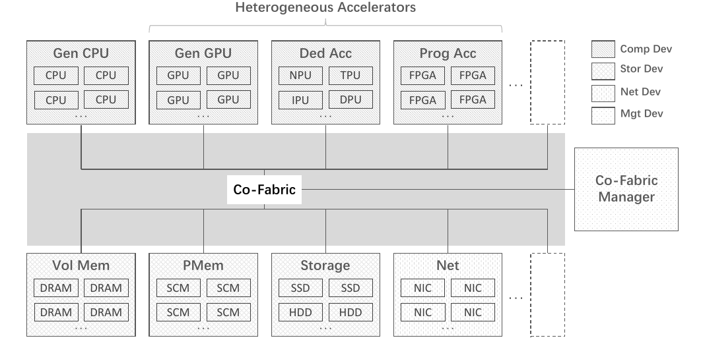
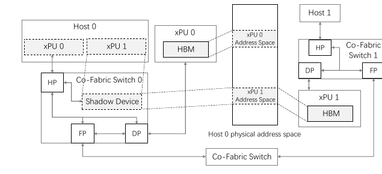
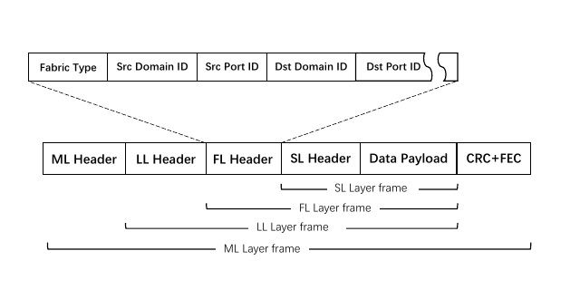
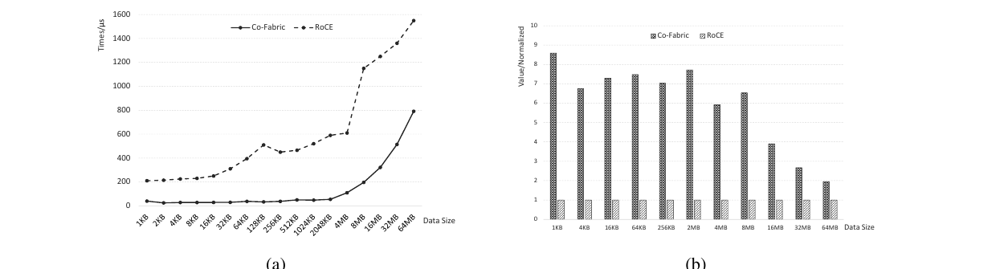
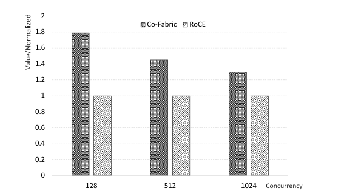
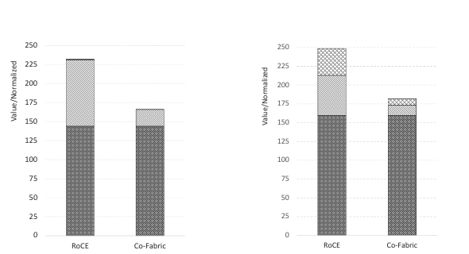

Co-Fabric: Breaking Host-Domain Boundaries for Unified xPU Interconnection
Co-Fabric 問的不是「Ethernet 還能快多少」，而是：能否把跨主機 xPU 重新做成一條具有 load/store 語意的 scale-up bus？作者主張它以四層精簡協定、Port-ID 硬體轉送與 shadow-device 自動枚舉，讓每個 host 看見同一組 xPU 與全域 HBM 位址。實驗事實在作者的 64-xPU 系統中，AllReduce 相對 RoCE 的延遲與頻寬、以及 DeepSeek R1 吞吐量都有明顯優勢；但 baseline 同時更換連結速率、NIC／retimer、switch 與拓撲，所以這些收益是整套系統的結果，尚不能單獨歸因於協定或全域位址空間。
文章目錄
為何跨主機 xPU 互連不是「再快一點的 Ethernet」？
第一個理解障礙，是把 scale-up 與一般網路混成同一件事。兩者都搬資料，但前者希望多張 xPU 像一台機器內的裝置，後者則預設彼此是透過訊息交換的獨立節點。
| 概念 | 網路／RDMA 視角 | bus／memory-semantic 視角 | 後文用途 |
|---|---|---|---|
| host domain | 每個 OS 維護自己的 address space | 希望多個 OS 看見同一組裝置位址 | 解釋為何需要 shadow device |
| 遠端存取 | 先註冊 Memory Region（MR），建立 Queue Pair（QP）、Completion Queue（CQ），交換 remote key（rkey） | 以 load/store 或 atomic operation 直接操作位址 | 解釋 Co-Fabric 想消除的 control-path 工作 |
| 拓撲 | 一般網路允許多跳與通用路由 | full mesh 追求最短路徑；rail-only 只連相同 device index，降低成本 | 解釋 64-xPU 3D-mesh 評估 |
作者主張RoCE 已有 kernel bypass、zero-copy 與 transport offload，但仍使用 message semantics：跨主機記憶體先要註冊、交換 key，host 之間也沒有原生的共同位址空間。相對地，bus-based fabric 能把裝置存取做得更接近本機 memory transaction，卻通常被限制在單一 host domain。§II-B · PDF p.3
分析因此，這篇論文最重要的比較不是「哪個線速更高」，而是三項語意是否能同時成立：跨 OS domain、load/store、硬體直接轉送。若只記住吞吐圖而忽略這層差異，就看不出 Co-Fabric 真正想改寫的是 system boundary。
下一個問題是：既然 RoCE 已能跨主機直接存取記憶體，作者認為仍缺少的到底是哪一段？
RoCE 能跨主機，為什麼作者仍認為它不夠像 scale-up bus？
真正的障礙不是「封包過不了 host boundary」，而是跨界後仍要切換成網路的位址、物件與訊息模型。對高頻、細粒度的 MoE All-to-All、tensor-parallel collective 或 remote HBM access，作者把每次 setup、封裝與 host-side 邊界都視為 data-movement tax。
論文把缺口寫成六項要求：精簡分層、memory consistency support、原生 memory semantics、極低延遲、足夠頻寬，以及 link-level reliability。作者主張現有方案要不是「低延遲但留在單一 domain」，要不就是「能跨 domain、卻付出網路堆疊與碎片化位址空間的代價」。§I · PDF pp.1–2
{kind=link}

因此 Co-Fabric 的設計要求可濃縮成一條因果鏈：若模型狀態與 activation 已跨 xPU 分散，則 communication 變成有效記憶體頻寬的一部分；若每個 host 保持獨立位址與 message setup，則細粒度存取會被 control-path 與 protocol-path 放大；所以互連必須同時統一裝置視圖、縮短 packet path，並把可靠性留在硬體鄰接鏈路。§III-A · PDF pp.3–4 · Fig. 1
這個問題定義也埋下評估風險：只要新系統把 protocol、PHY、switch、topology 與 software path 一次全換掉，端到端結果能證明「整體設計有效」，卻很難指出六項要求各自貢獻多少。
要讓這個構想變具體，可以先追蹤一次從 Host 0 讀取遠端 xPU 1 HBM 的動作。
把遠端 xPU 假裝成本機裝置，封包該如何走？
想像 Host 0 上的程式拿到一個看似本機的 HBM address，實際資料卻在 Host 1 的 xPU 1。Co-Fabric 的關鍵不是每次詢問 control plane「它在哪」，而是在開機時先把答案固化成裝置視圖與 forwarding entry。
- 枚舉：switch 發現下游 xPU，為每張 xPU 配置不重疊的 HBM range，並在每個 host 的 device hierarchy 注入相同的 shadow device。
- 發送：Semantic Layer（SL）把 load/store 轉成 transaction；endpoint 將目標 address 解析成 destination Domain ID 與 Port ID。
- 轉送：中途 switch 只讀 Fabric Layer（FL）header 的 destination Port ID，不需理解 HBM address，也不進入 host CPU 或 network stack。
- 完成：目標 xPU 以 SL 完成讀寫；response 沿記錄的來源路徑返回。
{kind=link}

作者主張因為每個 host 都枚舉相同的 shadow devices 與 HBM ranges，existing driver/runtime 不必知道 xPU 是 local 還是 remote，也不必在 runtime 建立 MR、QP、CQ 或 rkey。§III-D · PDF pp.6–8 · Figs. 4–6
分析最小心智模型是「DNS 在開機時就被烤進 switch，應用程式只留下 address lookup」；但這個比喻不完全精確，因為 Co-Fabric 不只是命名服務，還宣稱提供 ordering、atomics 與 memory semantics。論文沒有完整定義 consistency model、cache coherence 邊界或 access-control 規則，所以不能從這張圖推導出一般共享記憶體的全部保證。
有了這次 remote HBM read 的直覺後，接下來就能把四層協定、Port-ID 與可靠性機制串成完整資料路徑。
Co-Fabric 如何把位址、路由與可靠性壓進四層硬體資料路徑？
方法章的理解障礙，是容易把四層名稱當成功能清單。比較有效的讀法是沿著一個 transaction 從上到下走一次，觀察每層只保留 scale-up 必需的責任。
一條由語意到底層媒介的單向 pipeline
{kind=link}

Semantic Layer · SL
定義 load/store 與 atomic operation，把應用程式的遠端 memory access 轉成 Co-Fabric transaction。
Fabric Layer · FL
負責 address-to-port mapping、device discovery 與 Port-ID forwarding；Fabric Type 也可選 unicast、multicast、broadcast，以及 INC-ADD／MIN／MAX in-network reduction。
Link Layer · LL
以 credit-based flow control 避免 receiver-buffer overflow，並以 sequence number、CRC、ACK/NAK 與 selective retransmission 將 error recovery 限制在單一 hop。
Media Layer · ML
抽象 copper／optical physical medium 與 signal encoding，讓上層協定不綁特定媒介。
作者主張相對 TCP/IP 或 OSI 的通用分層，Co-Fabric 不設獨立 transport/network layer：LL 已提供可靠傳輸，FL 直接負責位址與路由，因而不需要 software buffering 或跨層介入。§III-B–C · PDF pp.4–6 · Figs. 2–3
Port-ID 為什麼能跨 domain，也能換拓撲？
Power-on 時，firmware 遍歷 xPU port 與 cascade port，配置 globally unique Port ID，並在每個 switch 安裝 forwarding table。Header 寬度不隨規模增加；增加 switch level 只擴充 table，因此同一 packet format 可落在 full mesh、CLOS 或 rail-only。作者主張這讓系統可從 16、32、64、128、256 張 xPU 繼續擴張，而 host software 不需改 header 或 routing logic。§III-C · PDF pp.5–6
從協定到 64-xPU 3D mesh
工程實作分成 southbound-only 與 hybrid southbound/northbound。評估採 hybrid 版本：每個 8-xPU node 內用 full mesh 取得直接連接；跨 node 則依大型模型流量多集中於相同 xPU index 的假設，使用 rail-only。這不是完全對稱的 fabric，而是以 workload locality 換取 port 與 switch 成本。§IV–V-A · PDF pp.8–10 · Figs. 7–9
分析因此 end-to-end 成效來自三個同時作用的層次：memory-semantic interface 降低 control path、Port-ID forwarding 縮短 switch path、traffic-aware topology 增加關鍵 rail 的可用頻寬。評估若沒有 ablation，就無法把三者分開。
方法是否真的改善 data movement，必須回到 matched hardware、collective microbenchmark 與完整 inference workload 分別檢查。
64 張 xPU 的結果證明了什麼，又只證明到哪裡？
這一章不把所有長條圖混成一句「更快」，而是把每個主張、測試、觀察與 caveat 放在同一個 claim-test unit 裡。
主張一：Co-Fabric 改善 collective 的小訊息延遲與大訊息頻寬
設定與控制。兩邊都是 64 張 xPU、每 node 8 張卡、每張 64 GB HBM，CPU core count、DRAM、drive 與 management/storage network 表面匹配；差異在於 Co-Fabric 端使用 8 組 x16、32 Gbps/lane port 與 retimer，RoCE 端使用 8×400 Gbps NIC，switch 數與 topology 也不同。§V-A · PDF pp.10–11 · Table III
{kind=link}

實驗事實小於 4 MB 時，Co-Fabric latency 是 RoCE 的 10–20%，normalized bandwidth 是 5–15×；4–64 MB 時，latency 是 15–50%，bandwidth 是 2–5×。§V-C · PDF pp.10–12 · Fig. 12
可支持的結論與 caveat。整個 64-xPU Co-Fabric 系統確實在這組 AllReduce 測試勝過其 RoCE baseline；但 paper 未提供 collective library、message scheduling、warm-up、重複次數或 error bar，也未把 raw link-rate 與 topology 差異正規化。
主張二：擴到 64 張卡時，每卡效能仍接近 8-card baseline
| Workload | 32 cards | 64 cards |
|---|---|---|
| DeepSeek V3/R1 · LoRA | 96% | 93% |
| QwQ-32B · full-parameter mode | 99% | 98% |
| Customer bio-genetic model · iteration | 99% | 98% |
實驗事實三個 workload 的 64-card normalized per-GPU performance 為 93–98%。§V-D · PDF pp.11–12 · Table IV 分析這支持「在 8→64 cards 內沒有嚴重 scaling collapse」，卻不能驗證論文宣稱的 thousand-xPU scalability；表中也沒有 absolute TGS、parallelism、sequence length 或 run variance。
主張三：通信優勢能傳到 DeepSeek R1 end-to-end throughput
{kind=link}

設定。DeepSeek R1 671B、SGLang、INT8、MLA、DP4、TP16 與 MoE TP，input/output 都是 1K tokens。實驗事實相對 RoCE，normalized throughput 約為 1.8×（concurrency 128）、1.45×（512）、1.3×（1024）。§V-E · PDF pp.11–12 · Fig. 13
Caveat。論文未給 xPU 型號、SGLang 版本、arrival process、throughput 絕對值或 latency SLO；因此只能說在這個固定 64-card setup 上整體吞吐提升，不能直接推成所有 inference serving workload 的 30–80%。
主張四：主要收益確實落在 AllGather／AllReduce 時間
{kind=link}

在 batch 512、input 3072、output 1024 的固定 workload 下，實驗事實prefill 約從 230 s 降到 170 s（−26%），其中 AllGather 約從 80 s 降到 20 s（−75%）；decode 約從 249 s 降到 182 s（−25%），AllGather 53→13 s、AllReduce 36→9 s（皆約 −75%）。§V-E · PDF pp.11–12 · Fig. 14
分析這是全文最有因果指向性的結果：compute block 大致不變，communication block 顯著縮短。然而它仍是兩套完整系統的 breakdown，而不是對 Port-ID、shadow device 或 credit flow control 的個別 ablation。
證據已能支持「這套 64-xPU 系統在特定 workload 優於該 RoCE baseline」；接下來要界定的是，哪些更強的結論仍超出實驗。
2–15× 的通信優勢能全歸因於協定嗎？
最大的驗證障礙是 attribution。兩個系統雖有相同 xPU 數量與記憶體容量，卻不是只換 protocol bitstream 的 A/B test。
能確定的強項
分析Co-Fabric 把 interface semantics、routing header、reliability 與 topology 放進同一個設計，因果故事很完整；Figure 14 也顯示 end-to-end improvement 的主要來源確實是 collective time，而非宣稱互連更快、實際卻只靠 compute 差異。64-card 實機與完整 DeepSeek R1 workload 比純模擬更有說服力。
尚不能拆開的混雜因素
| 主張 | 目前證據 | 缺少的控制 |
|---|---|---|
| 四層 protocol 本身降低 latency | 整套 Co-Fabric vs 整套 RoCE | matched PHY／topology 的 protocol-only ablation |
| global addressing 消除 runtime overhead | 機制描述與 end-to-end 結果 | MR/QP setup、first-touch、steady-state access 的逐項 measurement |
| 可擴至 thousands of xPUs | 最大 64 xPUs；table grows linearly 的設計論證 | multi-rack scale、routing-table pressure、failure/reconfiguration test |
| high reliability | credit + ACK/NAK protocol description | congestion、bit error、link failure、recovery tail-latency experiment |
| 80% cost、5% power saving | normalized cost 與約 4.0/3.8 kW bar chart | component model、price source、measurement boundary 與 uncertainty |
原始 link budget 也不完全相同：Co-Fabric 端每 port 是 x16×32 Gbps，RoCE 是 400 Gbps；switch 數、retimer/NIC data path 與 rail-only topology 同時改變。分析因此 2–15× 應解讀為 system-stack comparison，而不是「移除 transport layer 就自然得到 15×」。§V-A–C · PDF pp.10–12 · Table III
paper 未回答的 deployment 問題
論文未提供精確 memory consistency model、cache coherence 邊界、fault containment、security/isolation、access revocation 或 multi-tenant policy；也未實驗驗證「existing driver/runtime 無需調整」。沒有 NVLink/NVSwitch、UALink 或其他 scale-up fabric baseline，讓讀者無法判斷 Co-Fabric 相對於真正同類方案的位置。論文目前是 arXiv v1，未聲明 peer-reviewed venue。
若 global address 在 power-on 後固定，hot-plug、局部故障與容量異質性可能迫使系統在「零 runtime negotiation」與「可動態重組」之間取捨；paper 尚未測試這個控制面壓力。
這些限制不是否定結果，而是把下一輪研究問題從「是否更快」推進到「為何更快、何時仍正確、壞掉時怎麼辦」。
若要把 Co-Fabric 變成可採用的開放 scale-up fabric，還缺哪些實驗？
可重用的洞見，是讓 endpoint 在初始化時吸收 topology/address complexity，讓 hot path 只留下固定 header 與 hardware forwarding。下一步應把這個洞見拆成可反駁的子假設。
最優先的四組 follow-up
- 分析逐層 ablation：固定 PHY、link rate、collective library 與 topology，只切換 message/load-store semantics、Port-ID routing、shadow device、INC 與 reliability，量 TTFT、TPOT、collective p50/p99 與 CPU overhead。
- 分析failure matrix：注入 bit error、congestion、single-link/switch failure 與 host reboot，測 link retransmission、route repair、ordering correctness 與 tail latency；這才能驗證「native reliability」而不是只描述 packet field。
- 分析scale 與 churn：從 64 擴到 multi-rack，量 forwarding-table size、power-on enumeration time、reconfiguration pause、control traffic 與 heterogeneous HBM range fragmentation。
- 分析fair baseline：加入 NVLink/NVSwitch、UALink 或其他 memory-semantic scale-up fabric，並用同一 workload、相同 raw bandwidth 與相近 topology 比較，分清「bus vs network」與「特定實作」的差異。
值得帶到研究會議的問題
- 全域位址提供的是哪一級 consistency？哪些 atomic operation 跨 switch 仍有明確順序保證？
- shadow device 對現有 driver/runtime 真正透明，還是只對特定 xPU configuration-space model 成立？
- rail-only 對相同 index 流量最佳；若 expert placement、KV migration 或 failure 打破 locality，性能會如何退化？
- INC-ADD/MIN/MAX 與 link retransmission 同時存在時，如何保證 exactly-once reduction 與 numerical reproducibility？
- 若把 storage 與 management device 一併納入 flat address space，權限隔離與 fault containment 應落在哪一層？
推測最有潛力的方向不是把 Co-Fabric 當成封閉的 RoCE replacement，而是把「初始化時固定 mapping、資料面只做 Port-ID forwarding」抽象成可在不同 PHY 與 vendor device 上驗證的 open interface。
最後的參考附錄把 metadata、術語與關鍵證據位置集中起來，方便快速回查原文。
查證這篇論文時應記住哪些來源與名詞？
書目資訊
- 正式標題
- Co-Fabric: Breaking Host-Domain Boundaries for Unified xPU Interconnection
- 作者
- Zhen Peng、Jiaming Huang、Chaofan Chen、Zhao Zhang、An Wu、Baoyang Liu、Xinglong Wang、Tanlong Ci、Jinfeng Li、Xueke Duan、Hao Wang、Xi Chen、Shunshun Zhang、Zhiyuan Su、Zhu Cao、Zhichong Dou、Shaohua Wu、Lu Jing、Yue Yuan
- 來源
- arXiv:2609.25560v1 · cs.DC · submitted 2026-09-22
- 分類
- AI Infrastructure / Cluster Networking；主要貢獻是跨 host-domain 的 scale-up fabric、protocol 與 address-space architecture，LLM inference 是驗證 workload。
- 本地全文
- 開啟本地 PDF
- 頁數
- 共 13 頁
術語
- xPU
- 泛指 GPU、NPU、TPU、FPGA 等 accelerator；paper 用它避免把 fabric 綁定單一裝置類型。
- Domain ID / Port ID
- 前者標示 OS address domain，後者標示 fabric 中的 xPU 或 cascade port；FL header 以它們完成硬體轉送。
- Shadow device
- switch 注入 host device hierarchy 的虛擬端點，將預先配置的 address range 映到真正的遠端 xPU。
- Southbound / Northbound
- paper 中 southbound 指向 xPU/其他 component 的互連，northbound 指向 CPU 與跨 domain network 的互連。
- Rail-only
- 跨 node 只連接相同 xPU index 的低成本 topology，適合流量主要沿固定 rail 分布的 workload。
關鍵證據索引
- 問題、六項 design principles 與 contribution：§I，PDF pp.1–2。
- bus-based 與 network-based interconnect 的限制：§II-B，PDF p.3。
- 統一 compute/storage/network/management 的 architecture：§III-A，PDF pp.3–4，Figure 1、Table I。
- 四層 stack、FL header、Port-ID forwarding 與 Fabric Type：§III-B–C，PDF pp.4–6，Figures 2–3、Table II。
- global address space 與 shadow-device enumeration：§III-D，PDF pp.6–8，Figures 4–6。
- southbound/hybrid system 與 64-xPU 3D mesh：§IV–V-A，PDF pp.8–10，Figures 7–10。
- 兩個 64-xPU system 的 hardware configuration：§V-A，PDF pp.10–11，Table III。
- AllReduce latency 與 normalized bandwidth：§V-C，PDF pp.10–12，Figure 12。
- 8/32/64-card scaling efficiency：§V-D，PDF pp.11–12，Table IV。
- DeepSeek R1 throughput 與 prefill/decode breakdown：§V-E，PDF pp.11–12，Figures 13–14。